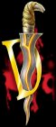

|  | olengur Horror |
Dolengur began his journeys around the 21st of Rethe, 2850 of the third age.
|
|
And he came, were the words of the ancient
loremasters. No one knew, where had he emerged from,
nor what was his quest! Usually you can see him running around the Lane
and thinking that he is the One and Only.
|
|
You are a male Orc. You are 88 years, 6 months and 3
days old.
You have played 10 days and 14 hours (real time).
This ranks you as Dolengur the One and Only Suicidal (level 26).
You are five feet four and weigh eight stone and two pounds.
Perception: vision 25, hearing 10, smell 20. Alertness: normal.
You are totally corrupted by the Evilness of Morgoth!
You are welcome in Goblin Town.
You are carrying 152 pounds of equipment. Heavy, but we will manage...
Your base abilities are: Str:20 Int:8 Wis:8 Dex:12 Con:21 Wil:15 Per:12.
Offensive Bonus: 98%, Dodging Bonus: 11%, Parrying Bonus: 68%.
You are not wearing any armour.
You have 433/433 hit, 80/80 mana, and 148/148 movement points.
You have scored 7,453,430 experience points and you have 37,221 travel
points.
|
|
On the 25th Foreyule, 2976 of the third age, you felt
like a new man.
On the 1st of Solmath in the year of 2964, you were killed in a Slag Pit
by a Man.
You were slain in a Slag Pit by a Dwarf.
On the 15th of Solmath in 2963, you were killed in Entrance to the Castle
Keep by a Dwarf.